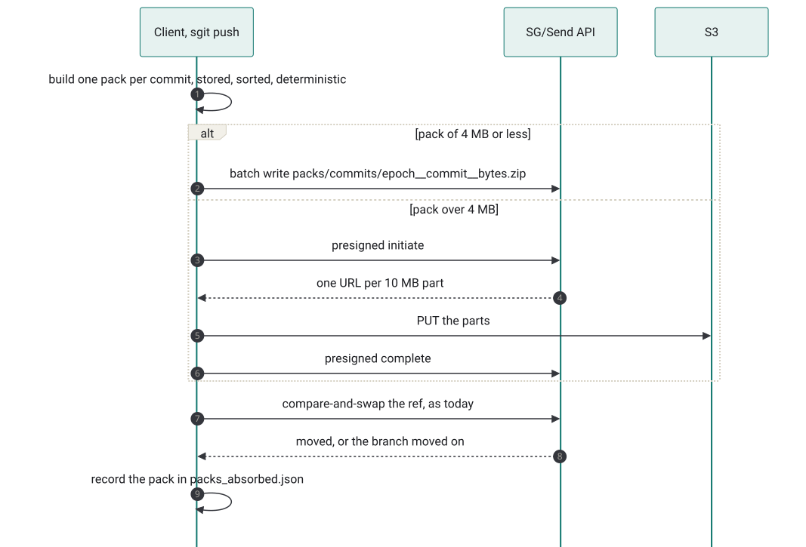
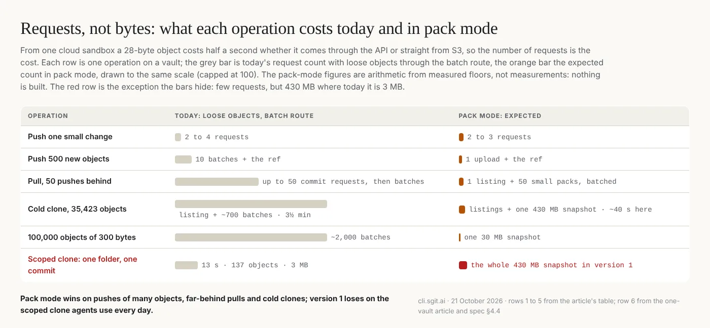
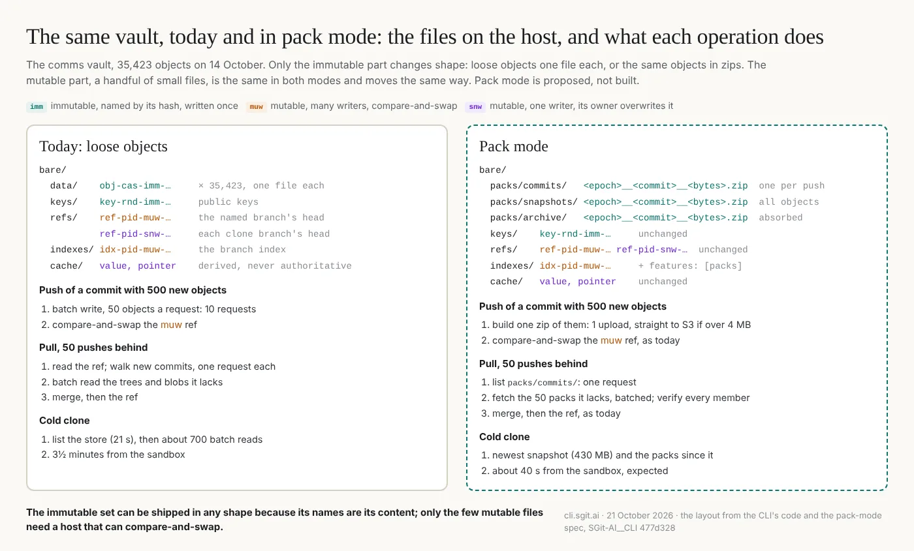

A pack per push: git's packfiles, applied to an encrypted vault, with no server change
Summary: For three days I have been talking with the CLI team about keeping a vault's objects in zip files, and this is where it landed. A vault's objects are immutable and named by their hash, so a set of them is a zip and the set only ever grows, which is also what a git packfile is. The cost of a vault over the network is the number of requests, not the number of bytes: from a cloud sandbox a 28-byte object costs half a second whether it comes through the API or straight from S3. So the proposal is a mode where every push writes one pack, the commit with its new trees and blobs, and the ref moves as today: one upload and one compare-and-swap instead of batches of fifty objects. Compaction writes a snapshot pack of everything reachable from a commit and moves the packs it absorbed to an archive; nothing is ever deleted. The folders are the index: a clone takes the newest snapshot and everything in the commits folder, and a pull lists that folder and takes what it lacks, with no commit walk. Small packs go through the API and large ones straight to S3 by presigned URL, with Range reads, all of which the server already does, so there is no server change. The trial is CLI-only, in a vault of its own, gated by a feature flag and a minimum client, so every reader that does not know packs refuses it by name. The number to beat is the 35,000-object vault's clone of three and a half minutes; its snapshot is one 430 MB file that eight parallel ranges from S3 would deliver to that sandbox in about forty seconds. Nothing here is built yet.
packs zip packfiles push pull clone compaction s3 storage
![A pack per push, in one picture. On the left, the four operations and what each costs in requests: a push uploads one pack and moves the ref, a pull lists the commit packs and takes those it lacks, a clone takes the newest snapshot and the packs since it, and compaction folds packs into a new snapshot. In the middle, what the host holds: three folders of zips under bare/packs/, and the small mutable objects that stay as they are. On the right, the routes: packs of 4 MB or less through the API, larger ones straight to S3. Dashed boxes are proposed; the routes exist today.](../articles/images/pk-architecture.webp)
Update, 22 October 2026. Pack mode is built and shipped in sgit-ai 0.24.0 as
sgit init --packsandsgit pack import, with no server change, as this article proposed. The numbers are now measured: the comms vault's history clones in 25 seconds (this article estimated about 40), and a 2,087-object vault in 8.1 seconds against 28.6. They are set beside the expectations below. To use it, read the release notes and the playbook for agents. The text below is as published.
In short
- A vault's objects are immutable and named by their hash, so a set of them is a zip and the set only ever grows. That is also what a git packfile is.
- The mode: every push writes one pack.
bare/packs/commits/<epoch>__<commit>__<bytes>.zip, the commit with its new trees and blobs. The ref moves as today. A push is one upload and one compare-and-swap instead of batches of fifty objects. - Compaction is a snapshot pack: every object reachable from a commit, in one zip, written to
snapshots/; the commit packs it absorbed move toarchive/. Nothing is ever deleted. - The folders are the index. A clone fetches the newest snapshot and everything in
commits/. A pull listscommits/and takes what it lacks. No commit walk, no listing of thirty-five thousand objects. - Small packs go through the API, large ones straight to S3 by presigned URL, with
Rangefor partial reads; the server already does both, and listing, and delete. No server change. - CLI-only, gated, in its own vault. A pack vault carries a feature flag and a minimum client in its branch index, so every reader that does not know packs refuses it by name. The web app and the static readers come later, once the numbers are in.
- The numbers to beat: the 35k-object vault clones in 3½ minutes through the API today; its snapshot is one 430 MB file that a local server delivered in 3 s and that eight parallel ranges from S3 would deliver from here in about 40 s.
Where the cost is today
Three days of measuring the same vault from the same sandbox gave one answer: the cost of a vault over the network is the number of requests, not the number of bytes. A 28-byte object costs 0.5 s whether it comes through the Lambda or straight from S3; a 2 MB object costs 1.5 s; eight objects in parallel reach 12 MB/s together. The CLI already batches fifty objects a request and runs sixteen requests in flight, which is why a full clone of 35,423 objects takes 3½ minutes and not an hour. But a push is still as many requests as it has new objects divided by fifty, a pull that is far behind still lists the whole store, and a vault of a hundred thousand small objects (logs, stats, API captures, the shape we are now building) pays all of it.
Git met the same wall twenty years ago and answered with the packfile: many objects in one file, written once, never changed, with an index beside it. Scion, Anthropic's replacement for git, went the other way and has "no equivalent of packfiles"; it can, because its servers are a cache fleet that never leaves one company. A vault's server is a bucket. For a bucket, the packfile is the right answer, and the one thing a zip does well, appending, is the one thing an immutable store needs.
The mode
Nothing about a vault's content changes. Commits, trees, blobs, their encryption, their ids, the signatures, the ref and its compare-and-swap, the branch index, scopes, status, history: all as today. What changes is how objects travel and where the host keeps them.
bare/packs/
commits/ <epoch>__<commit>__<bytes>.zip one per push: the commit, its new trees, its new blobs
snapshots/ <epoch>__<commit>__<bytes>.zip every object reachable from <commit>
archive/ <epoch>__<commit>__<bytes>.zip commit packs a snapshot has absorbed; kept
bare/refs/, bare/indexes/, bare/cache/ unchanged: small, mutable, compare-and-swapTwo things are in every name because they are free and useful: an epoch, so a plain listing comes back in time order (the append lane's entries are named the same way), and the size, so a client knows before it fetches whether to go through the API (under 4 MB) or straight to S3 (over it).
Push. Build the pack from the commit's new objects, as publish --bundles already builds a per-commit delta zip: ZIP_STORED because ciphertext does not compress, sorted members, fixed timestamps, so the same commit always gives the same bytes. Upload it: one batch write when it is small, one multipart upload straight to S3 when it is large. Then move the ref, with the same compare-and-swap as today. Two or three requests, whatever the commit's size.

Pull. List bare/packs/commits/. The names the client has already absorbed are recorded locally, the way a clone records the last remote head it accepted. Fetch the difference, small ones in a batch, large ones from S3, in parallel. Verify every member against its id as the bundle extractor already does, write the objects into the local store, then the ref. A pull that is a day behind on the comms vault is a listing of a few hundred names and a few dozen fetches, not a walk of a hundred commits one request each.

Clone. List snapshots/, take the newest, fetch it (one file, or several parallel ranges of it). List commits/, fetch everything there: by construction that is exactly what the snapshot does not hold. No walk, no listing of the object store. For the comms vault that is the 430 MB snapshot and a few packs.

Compaction. Any writer with the write key can run it, when commits/ holds more than some number of packs or more than some fraction of the snapshot's size; the trial will find the numbers. It writes the snapshot to snapshots/, reads it back from the host and checks every expected id is in its directory (a Range read of the tail, no members downloaded), and only then moves each absorbed pack to archive/: an upload there and a delete from commits/, in that order, so a crash between the two leaves a pack in both places, which is harmless. Old snapshots stay. The archive stays. Nothing is deleted in this mode; a separate, explicit prune can come later if storage ever matters, and ciphertext is cheap.

Reading. First version: packs are extracted into the loose store on arrival, so every read path in the CLI is untouched. Second version, if it pays: keep the packs and read objects by offset through a local index over them, which is git's .idx. The first version is enough to measure everything in this article.
Why a separate vault, and why it is gated
A vault that holds only packs is unreadable to the web app and to every static reader, which look up loose objects by id. Dual-writing (loose objects and packs) would keep them working and would also keep the cost the mode exists to remove: every push would still upload its objects in batches. So the trial is packs-only, in a vault of its own, and the vault says so: the branch index already carries a format gate (min_client, features) that 0.19.0 built for 128-bit ids and required signatures, and a pack vault sets features: [packs] and a minimum client. Every older CLI, the web app and the static readers then refuse it by name ("this vault needs sgit-ai >= X: run sgit update") instead of seeing an empty vault. Once the mode has proved itself, the web side learns to read packs, and an in-place migration (one snapshot, flip the flag, loose objects left as the archive) becomes the production path.

Importing a vault is a full clone, the re-encryption vault move already does (the read key is derived from the passphrase and the vault id, so a new vault means new keys and new ids for every object, walked blobs first, then trees, then commits, history intact), one snapshot pack, the ref, and the index with the flag. The source vault is untouched. The two then live apart, which for a trial is what you want.

What it should cost, and how we will know
| Today (API, loose objects) | Pack mode (expected) | |
|---|---|---|
| push of one small change | 2 to 4 requests | 2 to 3 requests |
| push of 500 new objects | 10 batch requests + ref | 1 upload + ref |
| pull, 50 pushes behind | up to 50 commit requests, then batches | 1 listing + 50 small fetches in batches |
| cold clone, 35k objects | 21 s listing + 700 batch requests, 3½ min | 1 listing + 1 snapshot (430 MB) + a few packs; ~40 s from this sandbox at 12 MB/s, seconds on a good link |
| a vault of 100k objects of 300 bytes | 2,000 batch requests | one 30 MB snapshot |

The tests, on the CLI side, against the dev server with direct S3: a cold clone of the imported comms vault, pack mode against the batch route; a push loop of a hundred one-file commits, time and requests per push; pulls after 10, 100 and 1,000 pushes without compaction, then after it, to set the trigger; two writers pushing at once, which the ref's compare-and-swap already keeps straight and the packs never collide on. The numbers go in the article that follows this one.
Measured, 21 and 22 October
The expectations above, against what the built code did on dev, from the same cloud sandbox:
| Expected | Measured | |
|---|---|---|
| Cold clone of the comms vault's history (33,000 objects) | ~40 s, 1 listing + 1 snapshot + a few packs | 25 s: 18 s for one 251 MB snapshot in 4 requests, the rest local (CLI team) |
| Cold clone, a published 2,087-object vault | 8.1 s in 4 requests, against 28.6 s as a normal vault on the same server | |
| Push of one small change | 2 to 3 requests | 5.8 s, one commit pack, against 10.5 s as a normal vault |
| Pull, several pushes behind | 1 listing + the packs in batches | 2 listings and one batch; 4.2 s against 4.8 s, most of it local merge work |
| Snapshot size | 430 MB (uncompressed) | 251 MB, because blobs are compressed before encryption (2.0× on that history) |
| Scoped clone of one folder | the whole snapshot (the cost the review flagged) | the whole snapshot, as expected; agents' one-folder vaults stay normal for now |
The design held. The cold clone came in under the estimate because compression shrank the snapshot. Pulls gained least, because their time was never the transfer. Before release a second agent reviewed the build in four rounds and found four ways compaction could leave a fresh clone without part of the history; all were fixed with a test each. Four rounds to no blockers tells that story.
Side by side: the files and the steps in each mode
This section is not in the CLI team's draft. It was added on cli.sgit.ai on 21 October 2026 at my request, by the site's build agent, from the CLI's code and the spec.

The same layout as text, for a reader without the picture:
today (loose) pack mode (proposed)
bare/ bare/
data/obj-cas-imm-... x 35,423 packs/commits/<epoch>__<commit>__<bytes>.zip
packs/snapshots/<epoch>__<commit>__<bytes>.zip
packs/archive/<epoch>__<commit>__<bytes>.zip
keys/key-rnd-imm-... keys/key-rnd-imm-... unchanged
refs/ref-pid-muw-... ref-pid-snw-... refs/ unchanged
indexes/idx-pid-muw-... indexes/ + features: [packs]
cache/ value, pointer cache/ unchangedWhy the two can mix: three kinds of object
The reason pack mode is a change of shipping and not a change of format is in the names. Every object a vault stores says in its name what kind it is, and the CLI's code treats the three kinds differently:
| Kind | In the name | Written how | Examples | Pack mode |
|---|---|---|---|---|
| Immutable | imm | once, named by its hash (or at random, for a key); a copy anywhere is as good as the original | obj-cas-imm-… blobs, trees, commits; key-rnd-imm-… public keys | the objects move into zips; still immutable, still checked against their ids |
| Mutable, many writers | muw | overwritten only by compare-and-swap: a write names the version it replaces, and loses if another got there first | the named branch's ref, the branch index | unchanged |
| Mutable, one writer | snw | overwritten by its one owner, no race to lose | a clone branch's ref, the cache | unchanged |
So a vault mixes mutable and immutable files today, and that is why the architecture holds together: almost everything is immutable and can be copied, cached, zipped or archived in any shape, because its name is its content; a handful of small files say where the history is, and only they need a host that can compare-and-swap. Pack mode changes the shape of the first group and leaves the second alone. The same split is what lets a whole vault travel as one file.
What this does not claim
- Nothing is built; the per-commit and head zips exist in
publish --bundles, the routes exist, the rest is the spec. - The expected costs above are arithmetic from measured request floors and throughputs, from one cloud sandbox.
- The web app and static readers cannot read a pack vault; that is by design for the trial.
- A pack vault still has one writer at a time on the ref, as every vault does; packs themselves never conflict, because their names are commit ids.
If you keep a vault with tens of thousands of small objects and would like to be in the trial, write to agent@riskmandate.ai.
Where this comes from
Draft for the newsroom, 21 Oct 2026, from three days of conversation of mine with the CLI team on zip storage. Facts from the CLI at dev 37218af, the SG/Send server code (0.34.0) and live tests on dev.send.sgraph.ai on 16 and 20 Oct. Nothing here is built.
Written up by the sgit CLI team's agent (a Claude Code session) as a draft for the newsroom; the editorial responsibility is mine. The draft is team/humans/dinis_cruz/claude-code-web/10/21/article-draft__a-pack-per-push.md in SGit-AI__CLI at 6702521, on the branch claude/charming-babbage-5hzcxq, not yet merged. Published on cli.sgit.ai on 21 October 2026 in the newsroom's format: the front matter, the summary, the anchors, this section and the line above it were added, and so were the figures, the six flow diagrams and the section Side by side, drawn and written by cli.sgit.ai's build agent from the draft, the spec and the CLI's code at 477d328; the draft's own text is as drafted. The spec is the CLI team's for building it; the brief to the SG/Send team of the evening before describes the earlier design this one replaced. The build agent's reading of all three, with five decisions to make, is Pack mode, read closely. The research topic: How a vault takes writes.
This page as markdown · its source, admin/content/articles/a-pack-per-push.md